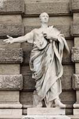
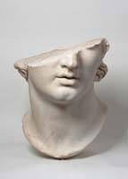
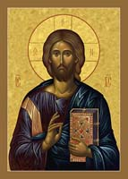
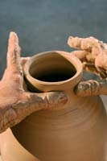

Aspendum vetus oppidum et nobile in Pamphylia scitis esse, plenissimum signorum optimorum. Non dicam illinc hoc signum ablatum esse et illud. hoc dico, nullum te Aspendi signum, Verres, reliquisse, omnia ex fanis, ex locis publicis, palam, spectantibus omnibus, plaustris evecta exportataque esse. Atque etiam illum Aspendium citharistam, de quo saepe audistis id quod est Graecis hominibus in proverbio, quem omnia ‘intus canere’ dicebant, sustulit et in intimis suis aedibus posuit, ut etiam illum ipsum suo artificio superasse videatur.
About This Page
Vereor ne haec forte cuipiam nimis antiqua et iam obsoleta videantur; ita enim tum aequabiliter omnes erant eius modi ut haec laus eximiae virtutis et innocentiae non solum hominum, verum etiam temporum illorum esse videatur. P. Servilius, vir clarissimus, maximis rebus gestis, adest de te sententiam laturus: Olympum vi, copiis, consilio, virtute cepit, urbem antiquam et omnibus rebus auctam et ornatam. Recens exemplum fortissimi viri profero; nam postea Servilius imperator populi Romani Olympum urbem hostium cepit quam tu in isdem illis locis legatus quaestorius oppida pacata sociorum atque amicorum diripienda ac vexanda curasti.
Pergae fanum antiquissimum et sanctissimum Dianae scimus esse: id quoque a te nudatum ac spoliatum esse, ex ipsa Diana quod habebat auri detractum atque ablatum esse dico. Quae, malum, est ista tanta audacia atque amentia! Quas enim sociorum atque amicorum urbis adisti legationis iure et nomine, si in eas vi cum exercitu imperioque invasisses, tamen, opinor, quae signa atque ornamenta ex iis urbibus sustulisses, haec non in tuam domum neque in suburbana amicorum, sed Romam in publicum deportasses.
|
 Cicero, Orator of Rome |
 Classical Thought |
|
Lilly of the Valley |
 Christ Pantocrator |
|
 A Potters Hands |
Waterfalls |
Quid ego de M. Marcello loquar, qui Syracusas, urbem ornatissimam, cepit? quid de L. Scipione, qui bellum in Asia gessit Antiochumque, regem potentissimum, vicit? quid de Flaminino, qui regem Philippum et Macedoniam subegit? quid de L. Paulo, qui regem Persen vi ac virtute superavit? quid de L. Mummio, qui urbem pulcherrimam atque ornatissimam, Corinthum, plenissimam rerum omnium, sustulit, urbisque Achaiae Boeotiaeque multas sub imperium populi Romani dicionemque subiunxit? Quorum domus, cum honore ac virtute florerent, signis et tabulis pictis erant vacuae; at vero urbem totam templaque deorum omnisque Italiae partis illorum donis ac monumentis exornatas videmus.